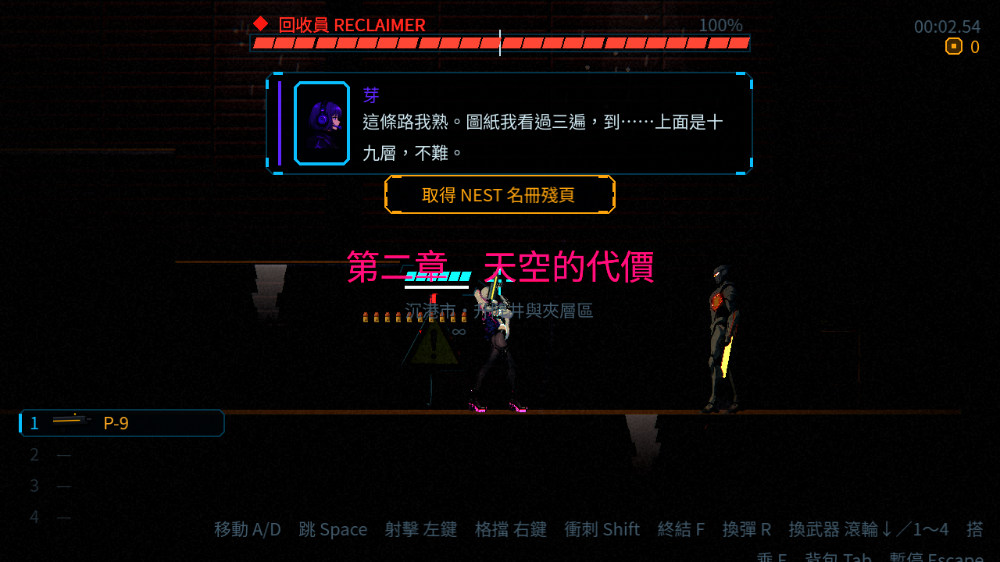
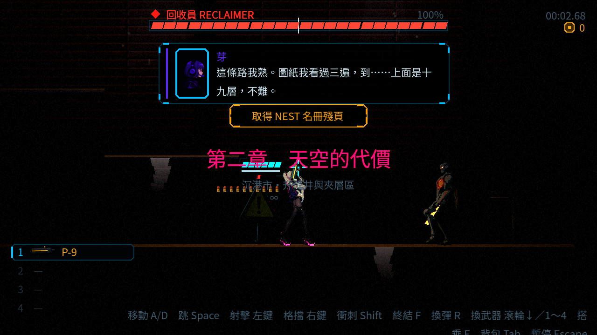

NE-154 真實關卡音樂串接驗證 無音訊輸出裝置，未人工試聽。以下為 Godot 4.7 的實際 Master 混音器錄音，非直接串接音檔；腳本定位、高生命、跳過過場。未從主選單完整通關。
範圍與限制 · 事件、時間、檔案與峰值 · 正式音效與關卡配置 · 147 位置與雙章槍聲、落脚、電話、短曲材料
舊第二章頭目戰修前／修後 真實 Level 跨過 arena → 生成 Reclaimer → boss_started。修前取到 boss_warden，修後為 boss_reclaimer。正式音檔、音量與淡入淡出不變，僅指定 map.levels.level_02.boss。
修前：舊第二章回收者頭目戰 / parent-boss-before-audio-level_02_boss {'arena_triggered': True, 'boss_active': True, 'cue': 'boss_warden', 'level': 'res://data/levels/level_02.tres', 'method': 'real level; placed near actual boss spawn across real arena trigger; no manual boss_started signal; high health; auto-skip', 'state': 'calm', 'zone': 'tower_white'}
[
[
9,
"calm_freight",
"res://audio/music/calm_freight.ogg"
],
[
838,
"boss_warden",
"res://audio/music/boss_warden.ogg"
]
] 修後（ST-3 合入）：舊第二章回收者頭目戰 / parent-boss-after-merged-level_02_boss {'arena_triggered': True, 'boss_active': True, 'cue': 'boss_reclaimer', 'level': 'res://data/levels/level_02.tres', 'method': 'real level; placed near actual boss spawn across real arena trigger; no manual boss_started signal; high health; auto-skip', 'state': 'calm', 'zone': 'tower_white'}
[
[
3,
"calm_freight",
"res://audio/music/calm_freight.ogg"
],
[
901,
"boss_reclaimer",
"res://audio/music/boss_reclaimer.ogg"
]
] 第一章／保留的舊第二章場景抽查（修前）
修正前：真實關卡 combat／boss 串接抽查 / parent-flow-ch1_warehouse_combat {'cue': 'combat_alleys', 'level': 'res://data/levels/ch1_warehouse.tres', 'method': 'real level; placed near existing enemy; explicitly raised alert to exercise real combat detection; high health', 'state': 'combat'}
[
[
152,
"combat_alleys",
"res://audio/music/combat_alleys.ogg"
]
] 修正前：真實關卡 combat／boss 串接抽查 / parent-flow-level_01_combat {'cue': 'combat_dungeon', 'level': 'res://data/levels/level_01.tres', 'method': 'real level; placed near existing enemy; explicitly raised alert to exercise real combat detection; high health', 'state': 'combat'}
[
[
31,
"calm_market",
"res://audio/music/calm_market.ogg"
],
[
251,
"combat_dungeon",
"res://audio/music/combat_dungeon.ogg"
]
] 修正前：真實關卡 combat／boss 串接抽查 / parent-flow-level_01_boss {'arena_triggered': True, 'cue': 'boss_warden', 'level': 'res://data/levels/level_01.tres', 'method': 'real level; placed across real arena trigger; no manual boss_started signal', 'state': 'combat'}
[
[
791,
"boss_warden",
"res://audio/music/boss_warden.ogg"
]
] 修正前：真實關卡 combat／boss 串接抽查 / parent-flow-level_02_combat {'cue': 'combat_robotic', 'level': 'res://data/levels/level_02.tres', 'method': 'real level; placed near existing enemy; explicitly raised alert to exercise real combat detection; high health', 'state': 'combat'}
[
[
17,
"calm_freight",
"res://audio/music/calm_freight.ogg"
],
[
185,
"combat_robotic",
"res://audio/music/combat_robotic.ogg"
]
] 修正前：真實關卡 combat／boss 串接抽查 / parent-flow-level_02_boss {'arena_triggered': True, 'cue': 'boss_warden', 'level': 'res://data/levels/level_02.tres', 'method': 'real level; placed across real arena trigger; no manual boss_started signal', 'state': 'combat'}
[
[
851,
"boss_warden",
"res://audio/music/boss_warden.ogg"
]
] 正式曲目來源（保留原選擇） 看守者完整正式片段 · 回收者完整正式片段 · CC0 授權登記
Forward+ 真實截圖 llvmpipe 軟體 Vulkan；捕捉影格慢，不作實機同步判斷。畫面有直接載入關卡的開場提示／對話，並非完整遊玩終點。
修前 
修後 